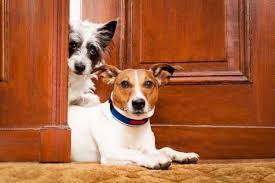
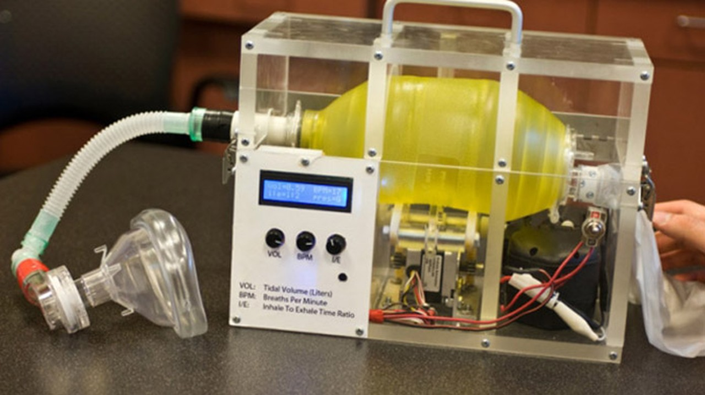
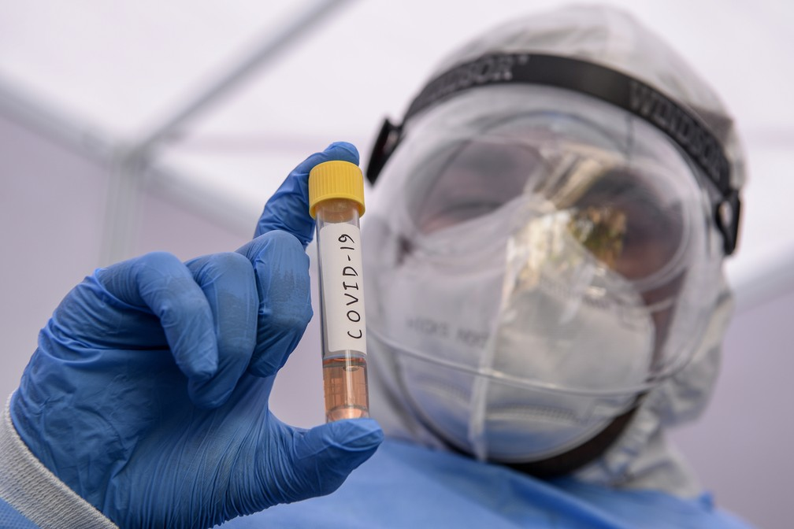

Veja o que o Dr. Gustavao Campana tem a dizer sobre a gravidade da doença.
Descubra os cuidados que devem ser tomados e se você está no grupo de risco ou não.
O que as pesquisas dizem sobre a relação entre pets e o novo coronavírus?

Em fevereiro, exames detectaram baixos níveis do novo coronavírus em um cachorro após seu dono contrair Covid-19.
Poucas semanas depois, um gato na Bélgica começou a apresentar sintomas, como problemas respiratórios, tosse e náusea.
Ele também havia contraído a doença. Já no início de abril, um tigre-malaio e outros felinos do Zoológico do Bronx,
em Nova York (EUA), tiveram resultado positivo para a Covid-19 provavelmente após contato com um funcionário que estava infectado.
Os casos, ainda que raros, chamaram a atenção de especialistas ao redor do mundo e, é claro, dos donos de pets.
É possível que animais domésticos contraiam a doença? Eles podem transmiti-la?
A ciência já nos traz algumas respostas, que servem de alerta principalmente para os amantes dos felinos.
MIT reativa projeto de ventilador pulmonar para ajudar no tratamento do COVID-19

Segundo um levantamento do jornal The Washington Post, ventiladores mecânicos tradicionais têm preço entre US$ 25 mil e US$ 50 mil,
algo em torno de R$ 127 mil e R$ 255 mil, dependendo do modelo. Portanto, as iniciativas podem fazer a diferença no combate aos efeitos
da pandemia. No caso do MIT, o fato de ser um design de código aberto significa que não terá patente registrada.
Dessa forma, qualquer um pode fabricá-lo integralmente sem precisar pagar royalties aos desenvolvedores.
O projeto foi desenvolvido há 10 anos com o objetivo de atender locais sem infraestrutura hospitalar adequada,
como zonas rurais e países em desenvolvimento. Na época, o produto não chegou a passar da fase de protótipo,
sendo reativado agora para atender à alta demanda por esse tipo de solução hospitalar. Os engenheiros também realizaram
modificações no desenho e em materiais para garantir mais facilidade de uso e durabilidade prolongada.
Estado de SP prorroga quarentena para até o dia 10 de Maio
O governador de São Paulo, João Doria, anunciou hoje (17) a prorrogação do período de quarentena no estado de São Paulo até o dia 10 de maio.
A medida é utilizada para evitar a propagação do vírus, diminuindo a circulação de pessoas nas ruas.
É a segunda vez que a quarentena é prorrogada em São Paulo. A prorrogação valeria até o dia 22 de abril,
mas o governador decidiu renová-la até maio. A medida vale para os 645 municípios do estado.
“Vamos ampliar a quarentena para evitar o colapso da saúde pública e também do sistema privado”, disse Doria.
Durante a quarentena no estado, somente podem funcionar os serviços considerados essenciais, tais como os de logística,
alimentação, saúde e segurança pública.
Átila Iamarino (biólogo e pesquisador) nos atualiza sobre a situação da pandemia no Brasil
Startup apoiada pela Finep desenvolve teste rápido para Covid-19

Com o avanço de casos de Covid-19 no Brasil, um dos maiores desafios tem sido como realizar mais testes e de maneira mais rápida.
Várias alternativas para os exames atuais que detectam o coronavírus – que levam dias para serem finalizados – vem surgindo.
Uma empresa de Curitiba já disponibiliza um laboratório portátil que pode realizar testes em poucos minutos.
A Hi Technologies, startup criada por ex-estudantes da PUCPR, produz o HiLab, um pequeno kit laboratorial que realiza a leitura do material coletado, envia os dados via internet para a central, e retransmite o resultado em minutos. Em 2010, a empresa foi apoiada pela Finep, com recursos de subvenção econômica operados de forma descentralizada – chamado à época Pappe Subvenção Paraná – no valor de R$ 300 mil. Os parceiros na ocasião para operacionalização foram: Fiep/Sebrae/ IBQP.